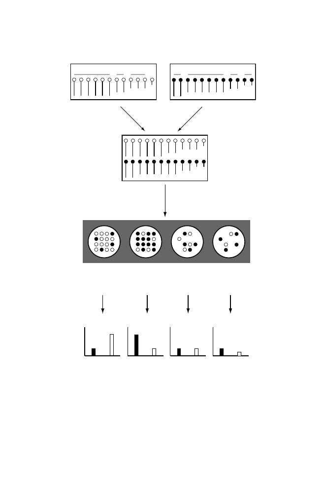

1
2
3
4
1
2
3
4
Sample X
Sample Y
Mix samples
Hybridize
Feature 1
Feature 2
Feature 3
Feature 4
Red
Green
Intensity
Red
Green
Intensity
Red
Green
Intensity
Red
Green
Intensity
R/G = 0.33
R/G = 3.0
R/G = 1.0
R/G = 2.0
Scan, measure fluorescence intensities
Fig. 11.4.
Principles of spotted microarrays. Samples X and Y are cDNA represen-
tations of transcript samples isolated under two different conditions. The same four
particular species are shown for each sample, and their abundances may or may not
differ under the two conditions. Sample X has been labeled with Cy3 (open circles:
produces green fluorescence), and sample Y has been labeled with Cy5 (filled circles:
produces red fluorescence). The mixture of equal amounts of X and Y is hybridized
to a spotted microarray (four features are indicated). The number of open or filled
circles in each feature represents the amount of Cy3- or Cy5-labeled target species
hybridized. The fluorescence intensities observed for each feature in each of the two
color channels are indicated at the bottom of the illustration.